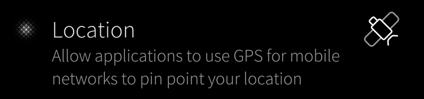

A toggle button with a label and an icon More...
| Import Statement: | import Sailfish.Silica 1.0 |
| Inherits: |

The IconTextSwitch type provides a Sailfish-styled toggle button with a textual label and an icon. IconTextSwitches are commonly used in settings pages. See inherited TextSwitch component for a more comprehensive API.
Here is a simple IconTextSwitch:
import QtQuick 2.2 import Sailfish.Silica 1.0 IconTextSwitch { text: "Location" icon.source: "image://theme/icon-m-gps" description: "Allow applications to use GPS for mobile networks to pin point your location" onCheckedChanged: locationSettings.locationEnabled = checked }
See also TextSwitch, Switch, and Label.
The image shown within the IconTextSwitch.